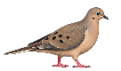
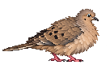
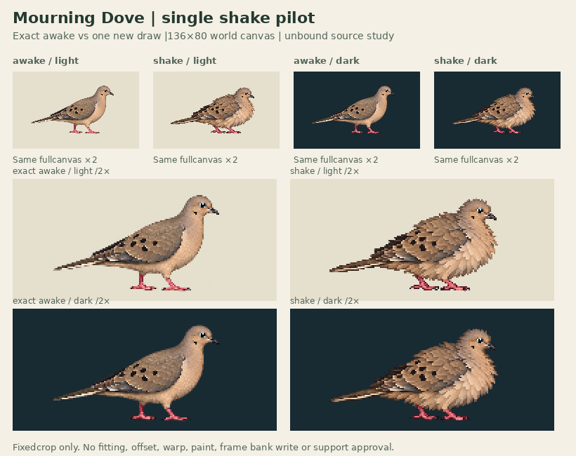

Actual136×80world canvases. One changed head/neck/breast/back pose with low wings, not a shake cycle or full bathing animation.


Phase held pending parent/cohort review. All positivealpha144export pixels fit the fixedcrop. No source fitting, offset, paint or cleanup. Contacts[]; geometryReviewedfalse; supportWorldnull. Warm partialalpha field/toe and feather redraw remain; matching raster baseline is not sole/pressure approval.
